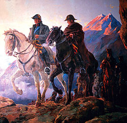
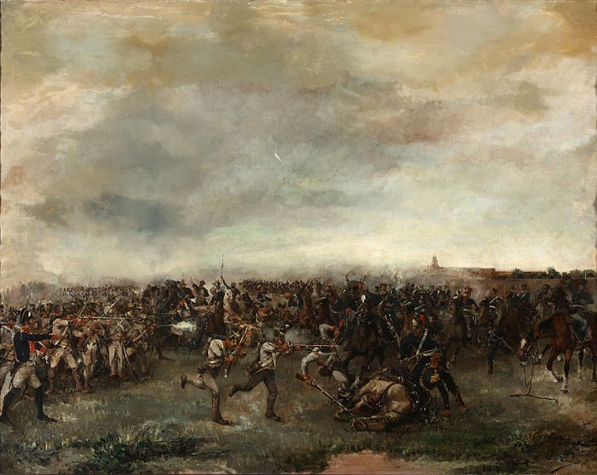
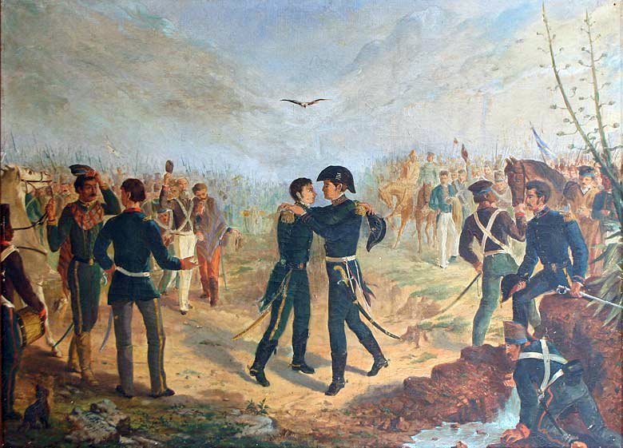

José Francisco de San Martín y Matorras
Soy militar y político argentino. Además, junto a mi compañero Simón Bolivar, uno de los libertadores de
Argentina, Chile y Perú. Ingresé al ejército español y fui militar en el Regimiento de Murcia.
Combatí en el norte africano, luego con la dominación napoleónica.
Cuando alcancé el grado de teniente coronel, me fui a Buenos Aires donde me puse al servicio de las
Provincias Unidas del Río de la Plata. Nació le Regimiento de Granaderos a Caballo y su primer combate fue
el de San Lorenzo.
Reemplacé en el Ejército del Norte a Manuel Belgrano.
Fui gobernador de Cuyo, alojado en Mendoza. Crucé la cordillera de los Andes con el Ejército con mismo
nombre y lideré la emancipación de Chile, en Maipú. Luego ataqué el poder español en Sudamérica y declaré la
independencia en Perú.
Nací el día 25 de Febrero en Yapeyú (Corrientes), en ese momento Virreinato del Río de la Plata. A
orillas
del río Uruguay.
Soy hijo de Juan de San Martín y Gómez y Georgina Matorras del Ser.
Hermano de María Elena, Manuel Tadeo, Juan Fermín y Justo Rufino.
Esposo de María de los Remedios de Escalada quien es fundadora de "La liga Patriótica de Mujeres" para
colaborar con el Ejército de los Andes.
Y padre de una hermosa hija llamada Mercedes Tomasa San Martín y Escalada, nacida el 24 de Agosto en
Mendoza.

En el cruce
12 DE ENERO 1817

Batalla de San Lorenzo
3 DE FEBRERO 1813

Con Belgrano en Yatasto
17 DE ENERO 1814